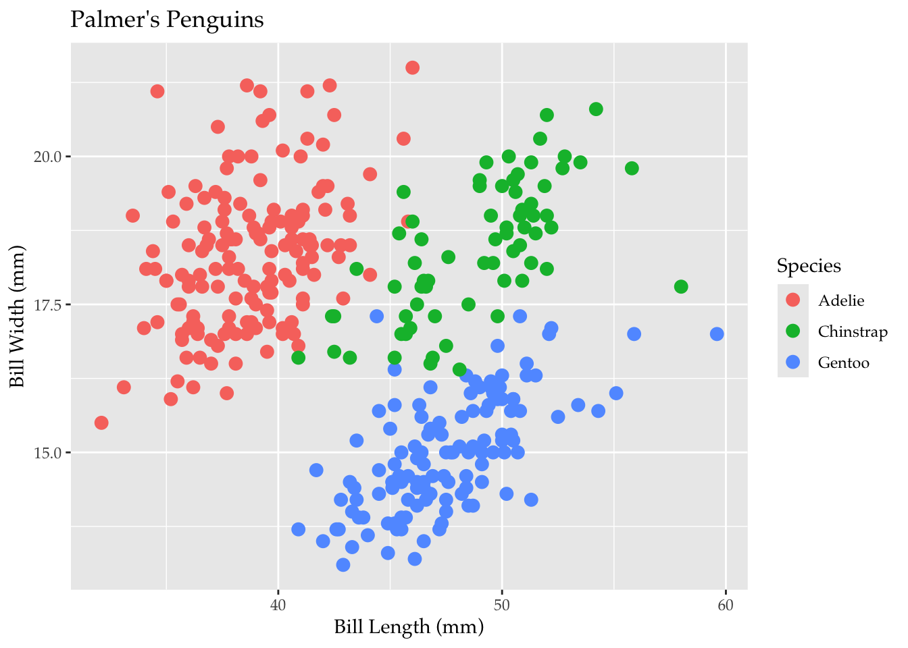
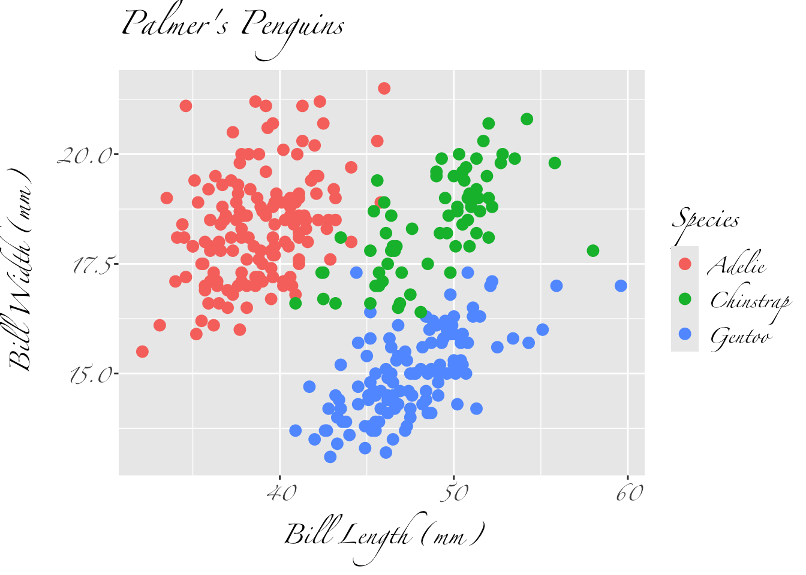
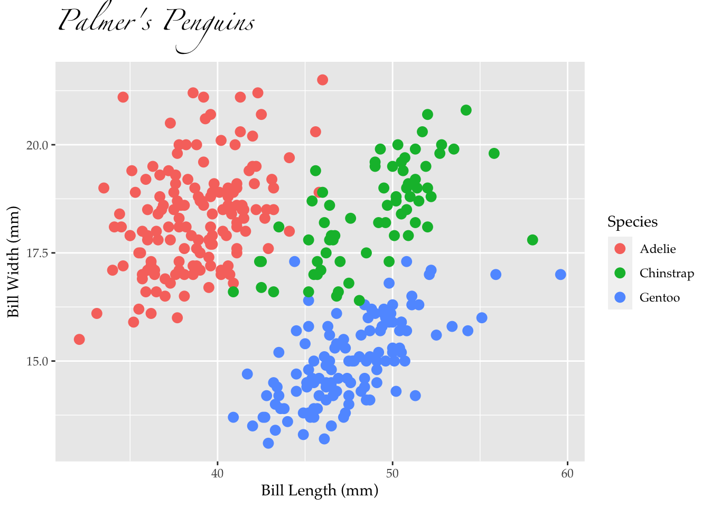
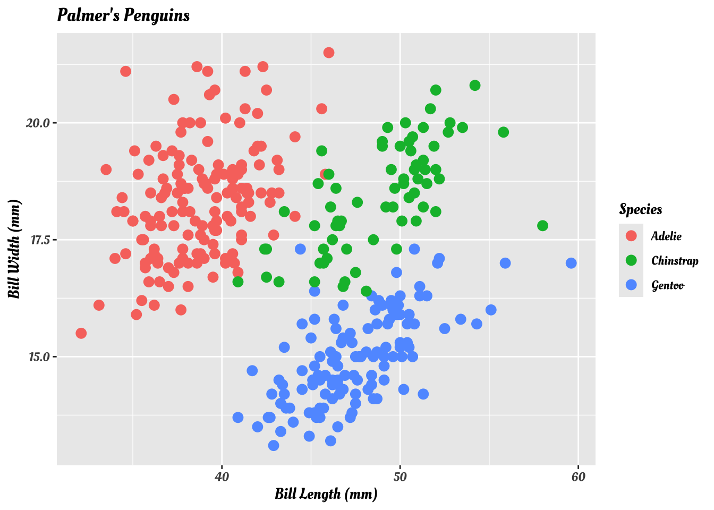

Lab 05: Fonts & Tables
BMI 5/625
Alison Hill & Steven Bedrick
1 Goals for Lab 05
Goal: Become familiar with tools for generating publication-ready tables directly in R.
We will use data from the following paper: MacFarlane, H., Gorman, K., Ingham, R., Presmanes Hill, A., Papadakis, K., Kiss, G., & van Santen, J. (2017). Quantitative analysis of disfluency in children with autism spectrum disorder or language impairment. PLoS ONE, 12(3), e0173936.
mazes <- read_csv("data/mazes.csv") %>%
clean_names() #janitor package
glimpse(mazes)Rows: 381
Columns: 12
$ study_id <chr> "CSLU-001", "CSLU-001", "CSLU-001", "CSLU-001", "CSLU-002", "CSLU-002", "CSLU-002", "CSLU-002", "CSLU-007", "CSLU-007", "C…
$ ca <dbl> 5.6667, 5.6667, 5.6667, 5.6667, 6.5000, 6.5000, 6.5000, 6.5000, 7.5000, 7.5000, 7.5000, 7.5000, 5.2500, 5.2500, 5.2500, 5.…
$ viq <dbl> 124, 124, 124, 124, 124, 124, 124, 124, 108, 108, 108, 108, 112, 112, 112, 112, 102, 102, 102, 102, 102, 102, 102, 102, 81…
$ dx <chr> "TD", "TD", "TD", "TD", "TD", "TD", "TD", "TD", "TD", "TD", "TD", "TD", "TD", "TD", "TD", "TD", "ASD", "ASD", "ASD", "ASD"…
$ activity <chr> "Conversation", "Picture Description", "Play", "Wordless Picture Book", "Conversation", "Picture Description", "Play", "Wo…
$ content <dbl> 24, 1, 21, 8, 3, 5, 8, 2, 25, 10, 2, 5, 32, 20, 13, 21, 27, 9, 12, 6, 60, 36, 17, 14, 30, 21, 54, 17, 27, 4, 10, 8, 7, 8, …
$ filler <dbl> 31, 2, 6, 2, 10, 3, 8, 2, 21, 13, 10, 2, 12, 9, 4, 4, 12, 6, 7, 3, 23, 6, 4, 6, 6, 2, 5, 0, 18, 5, 9, 0, 1, 2, 2, 17, 5, 2…
$ rep <dbl> 2, 0, 3, 0, 3, 2, 3, 0, 4, 0, 0, 0, 13, 5, 5, 6, 10, 5, 5, 2, 20, 16, 3, 3, 17, 8, 26, 6, 4, 1, 1, 2, 5, 5, 3, 8, 4, 4, 4,…
$ rev <dbl> 5, 0, 8, 4, 0, 1, 2, 0, 4, 2, 1, 3, 8, 7, 2, 8, 5, 1, 4, 2, 19, 10, 7, 2, 4, 2, 11, 5, 7, 2, 5, 2, 1, 0, 1, 10, 1, 5, 4, 1…
$ fs <dbl> 17, 1, 10, 4, 0, 2, 3, 2, 17, 8, 1, 2, 11, 8, 6, 7, 12, 3, 3, 2, 21, 10, 7, 9, 9, 11, 17, 6, 16, 1, 4, 4, 1, 3, 0, 18, 9, …
$ cued <dbl> 36, 2, 6, 2, 10, 3, 9, 2, 29, 13, 11, 2, 14, 12, 4, 11, 17, 7, 9, 4, 27, 11, 5, 10, 7, 2, 7, 0, 24, 5, 12, 0, 1, 2, 3, 29,…
$ not_cued <dbl> 50, 3, 27, 10, 13, 8, 15, 4, 38, 23, 11, 7, 42, 26, 17, 18, 34, 14, 17, 8, 79, 37, 20, 16, 35, 23, 57, 17, 39, 9, 16, 8, 8…2 TL;DR
The workhorse for making simple tables in R Markdown documents is the
knitr package’s kable function. This function
is really versatile, but also free of fancy formatting options, for
better or worse.
3
knitr::kable
3.1 kable
all tables everywhere
In order to tell RMarkdown to use kable to format all
tabular output, update the YAML header in your document and override the
df_print option, when producing HTML output:
---
title: "My Awesome Data Vis Lab"
output:
html_document:
df_print: kable
---You can also define the html format in the global options.
# If you don't define format here, you'll need put `format = "html"` in every kable function.
options(knitr.table.format = "html")
# You may also wish to set this option, to handle number formatting
options(scipen = 1, digits = 2)3.2 kable
table in a chunk
For HTML output:
head(mazes) %>%
kable(format = "html")| study_id | ca | viq | dx | activity | content | filler | rep | rev | fs | cued | not_cued |
|---|---|---|---|---|---|---|---|---|---|---|---|
| CSLU-001 | 5.6667 | 124 | TD | Conversation | 24 | 31 | 2 | 5 | 17 | 36 | 50 |
| CSLU-001 | 5.6667 | 124 | TD | Picture Description | 1 | 2 | 0 | 0 | 1 | 2 | 3 |
| CSLU-001 | 5.6667 | 124 | TD | Play | 21 | 6 | 3 | 8 | 10 | 6 | 27 |
| CSLU-001 | 5.6667 | 124 | TD | Wordless Picture Book | 8 | 2 | 0 | 4 | 4 | 2 | 10 |
| CSLU-002 | 6.5000 | 124 | TD | Conversation | 3 | 10 | 3 | 0 | 0 | 10 | 13 |
| CSLU-002 | 6.5000 | 124 | TD | Picture Description | 5 | 3 | 2 | 1 | 2 | 3 | 8 |
Note that this is a bit rough-looking. We will use various features
of kable to improve our output.
For starters, we can add a caption:
head(mazes) %>%
kable(format = "html", digits = 2, caption = "A table produced by kable.")| study_id | ca | viq | dx | activity | content | filler | rep | rev | fs | cued | not_cued |
|---|---|---|---|---|---|---|---|---|---|---|---|
| CSLU-001 | 5.67 | 124 | TD | Conversation | 24 | 31 | 2 | 5 | 17 | 36 | 50 |
| CSLU-001 | 5.67 | 124 | TD | Picture Description | 1 | 2 | 0 | 0 | 1 | 2 | 3 |
| CSLU-001 | 5.67 | 124 | TD | Play | 21 | 6 | 3 | 8 | 10 | 6 | 27 |
| CSLU-001 | 5.67 | 124 | TD | Wordless Picture Book | 8 | 2 | 0 | 4 | 4 | 2 | 10 |
| CSLU-002 | 6.50 | 124 | TD | Conversation | 3 | 10 | 3 | 0 | 0 | 10 | 13 |
| CSLU-002 | 6.50 | 124 | TD | Picture Description | 5 | 3 | 2 | 1 | 2 | 3 | 8 |
We can also manually specify human-readable column names:
my_maze_names <- c("Participant", "Age", "Verbal\nIQ", "Group", "Activity", "Content\nMaze", "Filler\nMaze", "Repetition", "Revision", "False\nStart", "Cued", "Not\nCued")
head(mazes) %>%
kable(format = "html", digits = 2, caption = "A table produced by kable.",
col.names = my_maze_names)| Participant | Age | Verbal IQ | Group | Activity | Content Maze | Filler Maze | Repetition | Revision | False Start | Cued | Not Cued |
|---|---|---|---|---|---|---|---|---|---|---|---|
| CSLU-001 | 5.67 | 124 | TD | Conversation | 24 | 31 | 2 | 5 | 17 | 36 | 50 |
| CSLU-001 | 5.67 | 124 | TD | Picture Description | 1 | 2 | 0 | 0 | 1 | 2 | 3 |
| CSLU-001 | 5.67 | 124 | TD | Play | 21 | 6 | 3 | 8 | 10 | 6 | 27 |
| CSLU-001 | 5.67 | 124 | TD | Wordless Picture Book | 8 | 2 | 0 | 4 | 4 | 2 | 10 |
| CSLU-002 | 6.50 | 124 | TD | Conversation | 3 | 10 | 3 | 0 | 0 | 10 | 13 |
| CSLU-002 | 6.50 | 124 | TD | Picture Description | 5 | 3 | 2 | 1 | 2 | 3 | 8 |
3.3 Styled
kable tables in a chunk
To improve the visual layout of the table, we can use the
kableExtra package, which provides the
kable_styling() function:
head(mazes) %>%
kable(format = "html", digits = 2, caption = "A styled kable table.",
col.names = my_maze_names) %>%
kable_styling()| Participant | Age | Verbal IQ | Group | Activity | Content Maze | Filler Maze | Repetition | Revision | False Start | Cued | Not Cued |
|---|---|---|---|---|---|---|---|---|---|---|---|
| CSLU-001 | 5.67 | 124 | TD | Conversation | 24 | 31 | 2 | 5 | 17 | 36 | 50 |
| CSLU-001 | 5.67 | 124 | TD | Picture Description | 1 | 2 | 0 | 0 | 1 | 2 | 3 |
| CSLU-001 | 5.67 | 124 | TD | Play | 21 | 6 | 3 | 8 | 10 | 6 | 27 |
| CSLU-001 | 5.67 | 124 | TD | Wordless Picture Book | 8 | 2 | 0 | 4 | 4 | 2 | 10 |
| CSLU-002 | 6.50 | 124 | TD | Conversation | 3 | 10 | 3 | 0 | 0 | 10 | 13 |
| CSLU-002 | 6.50 | 124 | TD | Picture Description | 5 | 3 | 2 | 1 | 2 | 3 | 8 |
There are lots of printing options: https://haozhu233.github.io/kableExtra/awesome_table_in_html.html
head(mazes) %>%
kable(format = "html", digits = 2, caption = "A non-full width zebra kable table.") %>%
kable_styling(bootstrap_options = "striped", full_width = F)| study_id | ca | viq | dx | activity | content | filler | rep | rev | fs | cued | not_cued |
|---|---|---|---|---|---|---|---|---|---|---|---|
| CSLU-001 | 5.67 | 124 | TD | Conversation | 24 | 31 | 2 | 5 | 17 | 36 | 50 |
| CSLU-001 | 5.67 | 124 | TD | Picture Description | 1 | 2 | 0 | 0 | 1 | 2 | 3 |
| CSLU-001 | 5.67 | 124 | TD | Play | 21 | 6 | 3 | 8 | 10 | 6 | 27 |
| CSLU-001 | 5.67 | 124 | TD | Wordless Picture Book | 8 | 2 | 0 | 4 | 4 | 2 | 10 |
| CSLU-002 | 6.50 | 124 | TD | Conversation | 3 | 10 | 3 | 0 | 0 | 10 | 13 |
| CSLU-002 | 6.50 | 124 | TD | Picture Description | 5 | 3 | 2 | 1 | 2 | 3 | 8 |
Note that by default the table will be centered; you can override
this by specifying a position:
head(mazes) %>%
kable(format = "html", digits = 2, caption = "Over here!") %>%
kable_styling(bootstrap_options = "striped", full_width = F, position = "left")| study_id | ca | viq | dx | activity | content | filler | rep | rev | fs | cued | not_cued |
|---|---|---|---|---|---|---|---|---|---|---|---|
| CSLU-001 | 5.67 | 124 | TD | Conversation | 24 | 31 | 2 | 5 | 17 | 36 | 50 |
| CSLU-001 | 5.67 | 124 | TD | Picture Description | 1 | 2 | 0 | 0 | 1 | 2 | 3 |
| CSLU-001 | 5.67 | 124 | TD | Play | 21 | 6 | 3 | 8 | 10 | 6 | 27 |
| CSLU-001 | 5.67 | 124 | TD | Wordless Picture Book | 8 | 2 | 0 | 4 | 4 | 2 | 10 |
| CSLU-002 | 6.50 | 124 | TD | Conversation | 3 | 10 | 3 | 0 | 0 | 10 | 13 |
| CSLU-002 | 6.50 | 124 | TD | Picture Description | 5 | 3 | 2 | 1 | 2 | 3 | 8 |
3.4 Controlling column appearance
We can control the formatting of individual columns using the
column_spec() function:
head(mazes) %>%
kable(format = "html", digits = 2, caption = "Over here!") %>%
kable_styling(bootstrap_options = "striped", full_width = F, position = "left") %>%
column_spec(4, width="3cm", background="lightblue", border_right=TRUE)| study_id | ca | viq | dx | activity | content | filler | rep | rev | fs | cued | not_cued |
|---|---|---|---|---|---|---|---|---|---|---|---|
| CSLU-001 | 5.67 | 124 | TD | Conversation | 24 | 31 | 2 | 5 | 17 | 36 | 50 |
| CSLU-001 | 5.67 | 124 | TD | Picture Description | 1 | 2 | 0 | 0 | 1 | 2 | 3 |
| CSLU-001 | 5.67 | 124 | TD | Play | 21 | 6 | 3 | 8 | 10 | 6 | 27 |
| CSLU-001 | 5.67 | 124 | TD | Wordless Picture Book | 8 | 2 | 0 | 4 | 4 | 2 | 10 |
| CSLU-002 | 6.50 | 124 | TD | Conversation | 3 | 10 | 3 | 0 | 0 | 10 | 13 |
| CSLU-002 | 6.50 | 124 | TD | Picture Description | 5 | 3 | 2 | 1 | 2 | 3 | 8 |
3.5 kable +
kableExtra + formattable
color_tile and color_bar are neat extras,
if used wisely and in moderation!
http://haozhu233.github.io/kableExtra/use_kableExtra_with_formattable.html
library(formattable)
head(mazes) %>%
mutate(ca = color_tile("transparent", "lightpink")(ca),
viq = color_bar("lightseagreen")(viq)) %>%
kable("html", escape = F, caption = 'This table is colored.') %>%
kable_styling(position = "center") %>%
column_spec(4, width = "3cm") | study_id | ca | viq | dx | activity | content | filler | rep | rev | fs | cued | not_cued |
|---|---|---|---|---|---|---|---|---|---|---|---|
| CSLU-001 | 5.6667 | 124 | TD | Conversation | 24 | 31 | 2 | 5 | 17 | 36 | 50 |
| CSLU-001 | 5.6667 | 124 | TD | Picture Description | 1 | 2 | 0 | 0 | 1 | 2 | 3 |
| CSLU-001 | 5.6667 | 124 | TD | Play | 21 | 6 | 3 | 8 | 10 | 6 | 27 |
| CSLU-001 | 5.6667 | 124 | TD | Wordless Picture Book | 8 | 2 | 0 | 4 | 4 | 2 | 10 |
| CSLU-002 | 6.5000 | 124 | TD | Conversation | 3 | 10 | 3 | 0 | 0 | 10 | 13 |
| CSLU-002 | 6.5000 | 124 | TD | Picture Description | 5 | 3 | 2 | 1 | 2 | 3 | 8 |
3.6 tibble +
kable + kableExtra
Sometimes, when writing a document or preparing a report, you may
have tabular information to present that is not already in a dataframe.
For example, consider the helpful table of vectorized math operators
from one of the slide decks. I made this by first manually creating a
data frame to hold the contents of the table (using the tibble package’s
tribble() function), and then formatting it as before.
Manually creating a quick-and-dirty dataframe with
tribble() is simple:
math_table <- tibble::tribble(
~Operator, ~Description, ~Usage, # column names
"\\+", "addition", "x + y", # each column, for each row, separated by commas
"\\-", "subtraction", "x - y",
"\\*", "multiplication", "x * y",
"/", "division", "x / y",
"^", "raised to the power of", "x ^ y",
"abs", "absolute value", "abs(x)",
"%/%", "integer division", "x %/% y",
"%%", "remainder after division", "x %% y"
)Then I used this chunk to print it:
```{r, results = 'asis'}
knitr::kable(math_table, format = "html", caption = "Helpful mutate functions") %>%
kable_styling(bootstrap_options = "striped", full_width = F, position = "left")
```knitr::kable(math_table, format = "html", caption = "Helpful mutate functions") %>%
kable_styling(bootstrap_options = "striped", full_width = F, position = "left")| Operator | Description | Usage |
|---|---|---|
| + | addition | x + y |
| - | subtraction | x - y |
| * | multiplication | x * y |
| / | division | x / y |
| ^ | raised to the power of | x ^ y |
| abs | absolute value | abs(x) |
| %/% | integer division | x %/% y |
| %% | remainder after division | x %% y |
4 Markdown Tables
Alternatively, you may just want to type in a table in Markdown and
ignore R. Four kinds of tables may be used. The first three kinds
presuppose the use of a fixed-width (monospaced) font, such as Courier.
The fourth method can be used with proportionally spaced fonts, as it
does not require lining up columns. All of the below will render when
typed outside of an R code chunk since these are based on
pandoc being used to render your markdown document. Note
that these should all work whether you are knitting to either html or
PDF.
4.1 Simple table
This code for a simple table:
Right Left Center Default
------- ------ ---------- -------
12 12 12 12
123 123 123 123
1 1 1 1
Table: Demonstration of simple table syntax.Produces this simple table:
| Right | Left | Center | Default |
|---|---|---|---|
| 12 | 12 | 12 | 12 |
| 123 | 123 | 123 | 123 |
| 1 | 1 | 1 | 1 |
The headers and table rows must each fit on one line. Column alignments are determined by the position of the header text relative to the dashed line below it:3
- If the dashed line is flush with the header text on the right side but extends beyond it on the left, the column is right-aligned.
- If the dashed line is flush with the header text on the left side but extends beyond it on the right, the column is left-aligned.
- If the dashed line extends beyond the header text on both sides, the column is centered.
- If the dashed line is flush with the header text on both sides, the default alignment is used (in most cases, this will be left).
- The table must end with a blank line, or a line of dashes followed by a blank line.
The column headers may be omitted, provided a dashed line is used to end the table.
4.2 Multi-line tables
This code for a multi-line table:
-------------------------------------------------------------
Centered Default Right Left
Header Aligned Aligned Aligned
----------- ------- --------------- -------------------------
First row 12.0 Example of a row that
spans multiple lines.
Second row 5.0 Here's another one. Note
the blank line between
rows.
-------------------------------------------------------------
Table: Here's the caption. It, too, may span
multiple lines.Produces this multi-line table:
| Centered Header | Default Aligned | Right Aligned | Left Aligned |
|---|---|---|---|
| First | row | 12.0 | Example of a row that spans multiple lines. |
| Second | row | 5.0 | Here’s another one. Note the blank line between rows. |
4.3 Grid tables
This code for a grid table:
: Sample grid table.
+---------------+---------------+--------------------+
| Fruit | Price | Advantages |
+===============+===============+====================+
| Bananas | $1.34 | - built-in wrapper |
| | | - bright color |
+---------------+---------------+--------------------+
| Oranges | $2.10 | - cures scurvy |
| | | - tasty |
+---------------+---------------+--------------------+Produces this grid table:
| Fruit | Price | Advantages |
|---|---|---|
| Bananas | $1.34 |
|
| Oranges | $2.10 |
|
Alignments are not supported, nor are cells that span multiple columns or rows.
Note that if you find yourself making a lot of these kinds of tables, you may want to use software like Monodraw to help.
4.4 Pipe tables
This code for a pipe table:
| Right | Left | Default | Center |
|------:|:-----|---------|:------:|
| 12 | 12 | 12 | 12 |
| 123 | 123 | 123 | 123 |
| 1 | 1 | 1 | 1 |
: Demonstration of pipe table syntax.Produces this pipe table:
| Right | Left | Default | Center |
|---|---|---|---|
| 12 | 12 | 12 | 12 |
| 123 | 123 | 123 | 123 |
| 1 | 1 | 1 | 1 |
This method does not depend on using a monospaced font!
5 gt
gt is a package from
RStudio designed for publication-ready figures. It is my go-to tool
for tables.

library(gt)Let’s set up a tiny little data table…
prepped_flight_data <- flights %>% filter(dest %in% c("DEN", "DCA", "JFK", "SFO")) %>%
group_by(dest) %>%
mutate_at(vars(dep_delay), replace_na, replace=0.0) %>%
summarise(mean_delay=mean(dep_delay, na.rm=TRUE), median_delay=median(dep_delay, na.rm=TRUE))
glimpse(prepped_flight_data)Rows: 4
Columns: 3
$ dest <chr> "DCA", "DEN", "JFK", "SFO"
$ mean_delay <dbl> 1.475138, 8.753835, 9.235996, 12.996799
$ median_delay <dbl> -3, -1, -1, -1… and now make a table out of it:
gt_formatted <- prepped_flight_data %>% gt() %>%
tab_header(title="PDX Departure Delays, DCA/DEN/JFK/SFO", subtitle="(Delay in minutes)") %>%
fmt_number(columns=vars(mean_delay, median_delay), decimals=2) %>%
cols_label(dest="Destination", mean_delay="Mean", median_delay="Median")
gt_formatted | PDX Departure Delays, DCA/DEN/JFK/SFO | ||
| (Delay in minutes) | ||
| Destination | Mean | Median |
|---|---|---|
| DCA | 1.48 | −3.00 |
| DEN | 8.75 | −1.00 |
| JFK | 9.24 | −1.00 |
| SFO | 13.00 | −1.00 |
We can adjust things like text alignment after-the-fact:
gt_formatted <- gt_formatted %>%
cols_align(align="center", columns=vars(dest)) %>%
tab_style(
cell_text(align = "right"),
locations = cells_title(groups = c("subtitle"))
) %>%
tab_style(
cell_text(style = "italic"),
locations = cells_title(groups=c("title"))
)
gt_formatted| PDX Departure Delays, DCA/DEN/JFK/SFO | ||
| (Delay in minutes) | ||
| Destination | Mean | Median |
|---|---|---|
| DCA | 1.48 | −3.00 |
| DEN | 8.75 | −1.00 |
| JFK | 9.24 | −1.00 |
| SFO | 13.00 | −1.00 |
Tip: In addition to cells_title(),
there are helpers to select any of the other cell types
(e.g. cells_column_labels(), etc.).
Now we can turn it into whatever we need! As Latex:
gt_formatted %>% gtsave("my_table.tex")As RTF, to put in Word:
gt_formatted %>% gtsave("my_table.rtf")6 Descriptive Stats tables
6.1
tableone
tableone is for generating “Table 1” in your paper. You
know, the “Subject Characteristics” table- lots of boring summary
statistics.
Vignette: https://cran.r-project.org/web/packages/tableone/vignettes/introduction.html
library(tableone)By default, its output is probably not what we want (though we can see hints of it down at the bottom)…
CreateTableOne(data = mazes)
Overall
n 381
study_id (%)
CSLU-001 4 ( 1.0)
CSLU-002 4 ( 1.0)
CSLU-007 4 ( 1.0)
CSLU-010 4 ( 1.0)
CSLU-020 4 ( 1.0)
CSLU-024 4 ( 1.0)
CSLU-027 4 ( 1.0)
CSLU-031 4 ( 1.0)
CSLU-036 3 ( 0.8)
CSLU-046 4 ( 1.0)
CSLU-053 4 ( 1.0)
CSLU-054 4 ( 1.0)
CSLU-059 4 ( 1.0)
CSLU-062 4 ( 1.0)
CSLU-066 4 ( 1.0)
CSLU-073 4 ( 1.0)
CSLU-077 4 ( 1.0)
CSLU-080 4 ( 1.0)
CSLU-082 3 ( 0.8)
CSLU-084 4 ( 1.0)
CSLU-089 4 ( 1.0)
CSLU-095 3 ( 0.8)
CSLU-096 4 ( 1.0)
CSLU-101 4 ( 1.0)
CSLU-104 4 ( 1.0)
CSLU-112 4 ( 1.0)
CSLU-117 4 ( 1.0)
CSLU-119 4 ( 1.0)
CSLU-122 4 ( 1.0)
CSLU-124 3 ( 0.8)
CSLU-142 4 ( 1.0)
CSLU-144 4 ( 1.0)
CSLU-146 4 ( 1.0)
CSLU-154 4 ( 1.0)
CSLU-156 4 ( 1.0)
CSLU-161 4 ( 1.0)
CSLU-163 4 ( 1.0)
CSLU-165 4 ( 1.0)
CSLU-167 4 ( 1.0)
CSLU-180 4 ( 1.0)
CSLU-191 4 ( 1.0)
CSLU-203 4 ( 1.0)
CSLU-204 4 ( 1.0)
CSLU-213 4 ( 1.0)
CSLU-216 4 ( 1.0)
CSLU-220 4 ( 1.0)
CSLU-226 4 ( 1.0)
CSLU-233 4 ( 1.0)
CSLU-238 4 ( 1.0)
CSLU-245 4 ( 1.0)
CSLU-258 4 ( 1.0)
CSLU-259 4 ( 1.0)
CSLU-263 4 ( 1.0)
CSLU-269 4 ( 1.0)
CSLU-274 4 ( 1.0)
CSLU-275 4 ( 1.0)
CSLU-277 4 ( 1.0)
CSLU-284 4 ( 1.0)
CSLU-290 4 ( 1.0)
CSLU-303 4 ( 1.0)
CSLU-306 4 ( 1.0)
CSLU-312 4 ( 1.0)
CSLU-315 4 ( 1.0)
CSLU-316 4 ( 1.0)
CSLU-320 4 ( 1.0)
CSLU-324 4 ( 1.0)
CSLU-332 4 ( 1.0)
CSLU-335 4 ( 1.0)
CSLU-339 4 ( 1.0)
CSLU-348 4 ( 1.0)
CSLU-349 4 ( 1.0)
CSLU-355 4 ( 1.0)
CSLU-359 4 ( 1.0)
CSLU-372 4 ( 1.0)
CSLU-373 4 ( 1.0)
CSLU-375 4 ( 1.0)
CSLU-379 4 ( 1.0)
CSLU-388 2 ( 0.5)
CSLU-389 4 ( 1.0)
CSLU-393 4 ( 1.0)
CSLU-395 4 ( 1.0)
CSLU-417 4 ( 1.0)
CSLU-419 4 ( 1.0)
CSLU-427 4 ( 1.0)
CSLU-432 3 ( 0.8)
CSLU-435 4 ( 1.0)
CSLU-441 4 ( 1.0)
CSLU-442 4 ( 1.0)
CSLU-447 4 ( 1.0)
CSLU-454 4 ( 1.0)
CSLU-460 4 ( 1.0)
CSLU-470 4 ( 1.0)
CSLU-472 4 ( 1.0)
CSLU-477 4 ( 1.0)
CSLU-482 4 ( 1.0)
CSLU-486 4 ( 1.0)
CSLU-499 4 ( 1.0)
ca (mean (SD)) 6.83 (1.06)
viq (mean (SD)) 100.82 (18.74)
dx (%)
ASD 183 (48.0)
SLI 71 (18.6)
TD 127 (33.3)
activity (%)
Conversation 94 (24.7)
Picture Description 94 (24.7)
Play 96 (25.2)
Wordless Picture Book 97 (25.5)
content (mean (SD)) 18.73 (24.84)
filler (mean (SD)) 11.20 (17.59)
rep (mean (SD)) 6.24 (9.45)
rev (mean (SD)) 3.79 (4.31)
fs (mean (SD)) 8.70 (12.76)
cued (mean (SD)) 14.36 (24.22)
not_cued (mean (SD)) 26.77 (31.73)We need to tell it a bit about what we are looking for:
## Vector of variables to summarize
my_num_vars <- c("ca", "viq", "content", "filler", "rep", "rev", "fs", "cued", "not_cued")
## Vector of categorical variables that need transformation
my_cat_vars <- c("dx", "activity")
## Create a TableOne object
tab2 <- CreateTableOne(vars = my_num_vars, data = mazes, factorVars = my_cat_vars)
print(tab2, showAllLevels = TRUE)
level Overall
n 381
ca (mean (SD)) 6.83 (1.06)
viq (mean (SD)) 100.82 (18.74)
content (mean (SD)) 18.73 (24.84)
filler (mean (SD)) 11.20 (17.59)
rep (mean (SD)) 6.24 (9.45)
rev (mean (SD)) 3.79 (4.31)
fs (mean (SD)) 8.70 (12.76)
cued (mean (SD)) 14.36 (24.22)
not_cued (mean (SD)) 26.77 (31.73)If we want the summary statistics to be computed on a per-strata basis, we can ask for that:
# Another
tab3 <- CreateTableOne(vars = my_num_vars, strata = "dx" , data = mazes)
tab3 Stratified by dx
ASD SLI TD p test
n 183 71 127
ca (mean (SD)) 6.74 (1.11) 7.15 (1.00) 6.76 (0.97) 0.015
viq (mean (SD)) 95.29 (17.62) 86.24 (5.95) 116.94 (12.82) <0.001
content (mean (SD)) 20.46 (29.73) 17.34 (24.35) 17.00 (15.67) 0.422
filler (mean (SD)) 7.86 (13.54) 10.56 (16.35) 16.38 (21.84) <0.001
rep (mean (SD)) 7.25 (11.82) 5.45 (6.86) 5.23 (6.21) 0.134
rev (mean (SD)) 3.87 (4.85) 3.25 (3.55) 3.98 (3.85) 0.498
fs (mean (SD)) 9.35 (14.60) 8.63 (15.00) 7.80 (7.55) 0.574
cued (mean (SD)) 10.66 (21.94) 13.21 (22.54) 20.35 (27.10) 0.002
not_cued (mean (SD)) 25.52 (33.49) 25.25 (31.84) 29.41 (29.04) 0.517 6.2
table1
Note that there is a similarly-named package called
table that does something very similar, but has a different
API and slightly different formatting capabilities:
library(table1)
table1(~ ca + viq + content + filler + rep + rev+ fs+ cued + not_cued | dx, data=mazes) | ASD (N=183) |
SLI (N=71) |
TD (N=127) |
Overall (N=381) |
|
|---|---|---|---|---|
| ca | ||||
| Mean (SD) | 6.74 (1.11) | 7.15 (1.00) | 6.76 (0.971) | 6.83 (1.06) |
| Median [Min, Max] | 6.75 [4.92, 8.92] | 7.50 [4.75, 8.67] | 6.67 [5.25, 8.75] | 6.83 [4.75, 8.92] |
| viq | ||||
| Mean (SD) | 95.3 (17.6) | 86.2 (5.95) | 117 (12.8) | 101 (18.7) |
| Median [Min, Max] | 91.0 [53.0, 133] | 85.0 [77.0, 98.0] | 116 [99.0, 143] | 102 [53.0, 143] |
| content | ||||
| Mean (SD) | 20.5 (29.7) | 17.3 (24.4) | 17.0 (15.7) | 18.7 (24.8) |
| Median [Min, Max] | 11.0 [0, 214] | 10.0 [0, 139] | 13.0 [0, 84.0] | 12.0 [0, 214] |
| filler | ||||
| Mean (SD) | 7.86 (13.5) | 10.6 (16.4) | 16.4 (21.8) | 11.2 (17.6) |
| Median [Min, Max] | 3.00 [0, 120] | 6.00 [0, 100] | 9.00 [0, 152] | 5.00 [0, 152] |
| rep | ||||
| Mean (SD) | 7.25 (11.8) | 5.45 (6.86) | 5.23 (6.21) | 6.24 (9.45) |
| Median [Min, Max] | 4.00 [0, 87.0] | 4.00 [0, 37.0] | 3.00 [0, 38.0] | 3.00 [0, 87.0] |
| rev | ||||
| Mean (SD) | 3.87 (4.85) | 3.25 (3.55) | 3.98 (3.85) | 3.79 (4.31) |
| Median [Min, Max] | 2.00 [0, 37.0] | 3.00 [0, 16.0] | 3.00 [0, 22.0] | 3.00 [0, 37.0] |
| fs | ||||
| Mean (SD) | 9.35 (14.6) | 8.63 (15.0) | 7.80 (7.55) | 8.70 (12.8) |
| Median [Min, Max] | 5.00 [0, 118] | 4.00 [0, 91.0] | 6.00 [0, 44.0] | 5.00 [0, 118] |
| cued | ||||
| Mean (SD) | 10.7 (21.9) | 13.2 (22.5) | 20.3 (27.1) | 14.4 (24.2) |
| Median [Min, Max] | 4.00 [0, 230] | 6.00 [0, 147] | 11.0 [0, 183] | 6.00 [0, 230] |
| not_cued | ||||
| Mean (SD) | 25.5 (33.5) | 25.3 (31.8) | 29.4 (29.0) | 26.8 (31.7) |
| Median [Min, Max] | 15.0 [1.00, 222] | 16.0 [1.00, 192] | 22.0 [1.00, 189] | 17.0 [1.00, 222] |
One nice thing about table1 is that it makes more
complex tables easier; for example, we can stratify by diagnosis
and ADOS activity as follows:
table1(~ ca + viq + content + filler + rep + rev+ fs+ cued + not_cued | activity * dx, data=mazes) Conversation |
Picture Description |
Play |
Wordless Picture Book |
Overall |
|||||||||||
|---|---|---|---|---|---|---|---|---|---|---|---|---|---|---|---|
| ASD (N=45) |
SLI (N=17) |
TD (N=32) |
ASD (N=45) |
SLI (N=18) |
TD (N=31) |
ASD (N=46) |
SLI (N=18) |
TD (N=32) |
ASD (N=47) |
SLI (N=18) |
TD (N=32) |
ASD (N=183) |
SLI (N=71) |
TD (N=127) |
|
| ca | |||||||||||||||
| Mean (SD) | 6.77 (1.13) | 7.16 (1.04) | 6.76 (0.979) | 6.71 (1.12) | 7.15 (1.01) | 6.76 (0.995) | 6.76 (1.12) | 7.15 (1.01) | 6.76 (0.979) | 6.73 (1.12) | 7.15 (1.01) | 6.76 (0.979) | 6.74 (1.11) | 7.15 (1.00) | 6.76 (0.971) |
| Median [Min, Max] | 6.83 [4.92, 8.92] | 7.50 [4.75, 8.67] | 6.75 [5.25, 8.75] | 6.75 [4.92, 8.92] | 7.33 [4.75, 8.67] | 6.67 [5.25, 8.75] | 6.79 [4.92, 8.92] | 7.33 [4.75, 8.67] | 6.75 [5.25, 8.75] | 6.75 [4.92, 8.92] | 7.33 [4.75, 8.67] | 6.75 [5.25, 8.75] | 6.75 [4.92, 8.92] | 7.50 [4.75, 8.67] | 6.67 [5.25, 8.75] |
| viq | |||||||||||||||
| Mean (SD) | 95.7 (17.7) | 86.6 (5.87) | 117 (12.9) | 95.3 (18.0) | 86.1 (6.13) | 117 (13.1) | 95.3 (17.7) | 86.1 (6.13) | 117 (12.9) | 94.8 (17.8) | 86.1 (6.13) | 117 (12.9) | 95.3 (17.6) | 86.2 (5.95) | 117 (12.8) |
| Median [Min, Max] | 91.0 [53.0, 133] | 85.0 [79.0, 98.0] | 116 [99.0, 143] | 91.0 [53.0, 133] | 85.0 [77.0, 98.0] | 116 [99.0, 143] | 91.0 [53.0, 133] | 85.0 [77.0, 98.0] | 116 [99.0, 143] | 91.0 [53.0, 133] | 85.0 [77.0, 98.0] | 116 [99.0, 143] | 91.0 [53.0, 133] | 85.0 [77.0, 98.0] | 116 [99.0, 143] |
| content | |||||||||||||||
| Mean (SD) | 33.6 (42.3) | 31.8 (34.3) | 31.3 (20.4) | 18.4 (32.8) | 9.44 (9.56) | 14.5 (11.6) | 20.8 (19.9) | 18.2 (29.1) | 13.0 (9.53) | 9.57 (8.24) | 10.7 (8.58) | 9.19 (8.01) | 20.5 (29.7) | 17.3 (24.4) | 17.0 (15.7) |
| Median [Min, Max] | 25.0 [0, 208] | 17.0 [1.00, 139] | 26.0 [3.00, 84.0] | 10.0 [1.00, 214] | 5.50 [0, 34.0] | 10.0 [1.00, 40.0] | 14.5 [2.00, 72.0] | 9.50 [1.00, 129] | 11.0 [0, 42.0] | 6.00 [0, 36.0] | 6.50 [3.00, 26.0] | 8.00 [1.00, 40.0] | 11.0 [0, 214] | 10.0 [0, 139] | 13.0 [0, 84.0] |
| filler | |||||||||||||||
| Mean (SD) | 17.3 (21.9) | 22.3 (26.9) | 34.9 (31.8) | 5.53 (9.15) | 7.78 (7.47) | 15.0 (15.6) | 6.46 (7.57) | 8.44 (12.7) | 10.0 (10.7) | 2.38 (2.09) | 4.39 (3.73) | 5.63 (7.83) | 7.86 (13.5) | 10.6 (16.4) | 16.4 (21.8) |
| Median [Min, Max] | 12.0 [0, 120] | 13.0 [2.00, 100] | 22.0 [4.00, 152] | 3.00 [0, 56.0] | 5.50 [0, 24.0] | 9.00 [0, 73.0] | 4.00 [0, 33.0] | 5.50 [0, 57.0] | 7.50 [0, 48.0] | 2.00 [0, 9.00] | 4.00 [0, 16.0] | 3.00 [0, 42.0] | 3.00 [0, 120] | 6.00 [0, 100] | 9.00 [0, 152] |
| rep | |||||||||||||||
| Mean (SD) | 12.1 (17.5) | 9.06 (9.48) | 9.75 (8.64) | 5.93 (12.1) | 3.28 (3.39) | 4.84 (5.64) | 7.80 (8.10) | 6.00 (8.37) | 3.81 (3.69) | 3.34 (3.85) | 3.67 (2.45) | 2.50 (2.60) | 7.25 (11.8) | 5.45 (6.86) | 5.23 (6.21) |
| Median [Min, Max] | 6.00 [0, 87.0] | 6.00 [0, 37.0] | 6.50 [2.00, 38.0] | 2.00 [0, 78.0] | 2.00 [0, 11.0] | 3.00 [0, 27.0] | 5.00 [0, 30.0] | 3.00 [0, 36.0] | 3.00 [0, 18.0] | 2.00 [0, 16.0] | 3.50 [0, 9.00] | 2.00 [0, 11.0] | 4.00 [0, 87.0] | 4.00 [0, 37.0] | 3.00 [0, 38.0] |
| rev | |||||||||||||||
| Mean (SD) | 6.22 (5.97) | 5.94 (4.71) | 7.09 (5.35) | 3.27 (5.56) | 1.67 (1.71) | 3.10 (2.69) | 4.02 (4.16) | 3.44 (3.55) | 3.09 (2.43) | 2.04 (1.81) | 2.11 (2.05) | 2.59 (2.28) | 3.87 (4.85) | 3.25 (3.55) | 3.98 (3.85) |
| Median [Min, Max] | 5.00 [0, 25.0] | 5.00 [0, 14.0] | 6.00 [0, 22.0] | 2.00 [0, 37.0] | 1.00 [0, 5.00] | 2.00 [0, 11.0] | 3.00 [0, 16.0] | 3.00 [1.00, 16.0] | 3.00 [0, 9.00] | 2.00 [0, 7.00] | 2.00 [0, 7.00] | 2.00 [0, 9.00] | 2.00 [0, 37.0] | 3.00 [0, 16.0] | 3.00 [0, 22.0] |
| fs | |||||||||||||||
| Mean (SD) | 15.3 (21.2) | 16.8 (22.1) | 14.4 (9.58) | 9.16 (16.0) | 4.50 (5.63) | 6.55 (5.85) | 8.96 (9.64) | 8.78 (17.6) | 6.09 (5.06) | 4.19 (4.01) | 4.94 (5.24) | 4.09 (4.18) | 9.35 (14.6) | 8.63 (15.0) | 7.80 (7.55) |
| Median [Min, Max] | 10.0 [0, 118] | 8.00 [0, 91.0] | 12.5 [0, 44.0] | 4.00 [0, 99.0] | 2.50 [0, 21.0] | 5.00 [0, 20.0] | 6.00 [0, 47.0] | 3.50 [0, 77.0] | 5.00 [0, 23.0] | 3.00 [0, 16.0] | 2.50 [0, 17.0] | 3.00 [0, 20.0] | 5.00 [0, 118] | 4.00 [0, 91.0] | 6.00 [0, 44.0] |
| cued | |||||||||||||||
| Mean (SD) | 23.6 (37.1) | 27.3 (36.7) | 42.5 (39.3) | 8.02 (16.1) | 9.50 (10.5) | 18.7 (19.9) | 8.35 (10.1) | 10.9 (20.2) | 12.7 (13.5) | 3.09 (3.09) | 5.94 (5.64) | 7.47 (11.5) | 10.7 (21.9) | 13.2 (22.5) | 20.3 (27.1) |
| Median [Min, Max] | 14.0 [0, 230] | 15.0 [2.00, 147] | 29.0 [4.00, 183] | 4.00 [0, 104] | 6.50 [0, 38.0] | 11.0 [0, 97.0] | 5.00 [0, 39.0] | 6.00 [0, 90.0] | 8.50 [0, 60.0] | 3.00 [0, 14.0] | 5.00 [0, 22.0] | 3.50 [0, 63.0] | 4.00 [0, 230] | 6.00 [0, 147] | 11.0 [0, 183] |
| not_cued | |||||||||||||||
| Mean (SD) | 44.7 (47.5) | 49.1 (46.5) | 58.5 (38.6) | 21.4 (34.1) | 15.5 (12.1) | 25.7 (19.2) | 25.3 (22.9) | 24.2 (33.3) | 20.3 (14.2) | 11.3 (8.58) | 13.6 (8.61) | 13.0 (11.2) | 25.5 (33.5) | 25.3 (31.8) | 29.4 (29.0) |
| Median [Min, Max] | 33.0 [2.00, 218] | 29.0 [3.00, 192] | 43.5 [13.0, 189] | 13.0 [1.00, 222] | 12.5 [1.00, 39.0] | 24.0 [3.00, 83.0] | 18.0 [4.00, 79.0] | 16.5 [4.00, 153] | 16.5 [1.00, 62.0] | 8.00 [1.00, 34.0] | 9.50 [4.00, 28.0] | 9.50 [1.00, 61.0] | 15.0 [1.00, 222] | 16.0 [1.00, 192] | 22.0 [1.00, 189] |
This is, of course, just for demonstration purposes! Please do not make a table this large. :-D
Note that table1’s output is always HTML, which may or
may not be what you want. It has numerous options for customization and
formatting, etc.
7 The DT
package
DT lets us produce interactive data tables for use in
HTML reports that go far beyond kable’s capabilities.
An excellent tutorial on DT is available at https://rstudio.github.io/DT/.
“Out of the box”, datatable gives us a very usable
table:
datatable(mazes)There are numerous ways we can customized and configure things from here!
8 Finally, fonts!
8.1 Your friend,
extrafont
The extrafont
package is the best place to start with fonts in R and ggplot.
library(extrafont)
# font_import() # build the font database; only need to call this once (or after installing new fonts)
loadfonts() # _load_ the font database; should call this once per sessionNote: Make sure to follow all installation
instructions from github!
Note: Also, you may need to install a custom version
of one of extrafont’s dependencies; if you get a bunch of
errors about “No Font Name” and no fonts end up being imported, see this
discussion.
You can access fonts on your local system in ggplot by
using the theme() function to set the relevant properties
of your figure.
Let’s set up a basic scatterplot to start from:
Out of the box, the default ggplot theme uses pretty
boring fonts. How might we change that?
In ggplot, the theme() function lets us
control the appearance of various aspects of the plot. There are many, many
properties we can tweak; we will begin by setting the global
text property for all text on the entire plot.
Let’s try changing that font a bit:
demo_plt + theme(text=element_text(family="Optima"))demo_plt + theme(text=element_text(family="Palatino"))
demo_plt + theme(text=element_text(family="Zapfino"))
Note that the specific name that you must use to refer to
the font is not exactly obvious. It is not the font name, but rather the
font’s “family name”. Because of some under-the-hood details about the
way that fonts work, this is a bit different from what you might see in
e.g. a font selection menu in Word. You can see a list of all the fonts
that R knows about by using the fonttable() command:
fonttable() %>% glimpse()Rows: 296
Columns: 10
$ package <lgl> NA, NA, NA, NA, NA, NA, NA, NA, NA, NA, NA, NA, NA, NA, NA, NA, NA, NA, NA, NA, NA, NA, NA, NA, NA, NA, NA, NA, NA, NA, …
$ afmfile <chr> "SFCompactRounded.afm.gz", "Keyboard.afm.gz", "NewYork.afm.gz", "NewYorkItalic.afm.gz", "SFArabic.afm.gz", "SFCompact.af…
$ fontfile <chr> "/System/Library/Fonts/SFCompactRounded.ttf", "/System/Library/Fonts/Keyboard.ttf", "/System/Library/Fonts/NewYork.ttf",…
$ FullName <chr> ".SF Compact Rounded", ".Keyboard", ".New York", ".New York Italic", ".SF Arabic", ".SF Compact", ".SF Compact", "System…
$ FamilyName <chr> ".SF Compact Rounded", ".Keyboard", ".New York", ".New York", ".SF Arabic", ".SF Compact", ".SF Compact", "System Font",…
$ FontName <chr> "--SFCompactRounded-Regular", "-Keyboard", "-NewYork-Regular", "-NewYork-RegularItalic", "-SFArabic-Regular", "-SFCompac…
$ Bold <lgl> FALSE, FALSE, FALSE, FALSE, FALSE, FALSE, FALSE, FALSE, FALSE, FALSE, FALSE, FALSE, FALSE, FALSE, FALSE, FALSE, FALSE, F…
$ Italic <lgl> FALSE, FALSE, FALSE, TRUE, FALSE, FALSE, TRUE, FALSE, TRUE, FALSE, TRUE, FALSE, FALSE, FALSE, FALSE, FALSE, FALSE, FALSE…
$ Symbol <lgl> FALSE, FALSE, FALSE, FALSE, FALSE, FALSE, FALSE, FALSE, FALSE, FALSE, FALSE, FALSE, FALSE, FALSE, FALSE, FALSE, FALSE, F…
$ afmsymfile <lgl> NA, NA, NA, NA, NA, NA, NA, NA, NA, NA, NA, NA, NA, NA, NA, NA, NA, NA, NA, NA, NA, NA, NA, NA, NA, NA, NA, NA, NA, NA, …fonttable() %>% head()| package | afmfile | fontfile | FullName | FamilyName | FontName | Bold | Italic | Symbol | afmsymfile |
|---|---|---|---|---|---|---|---|---|---|
| SFCompactRounded.afm.gz | /System/Library/Fonts/SFCompactRounded.ttf | .SF Compact Rounded | .SF Compact Rounded | --SFCompactRounded-Regular | FALSE | FALSE | FALSE | ||
| Keyboard.afm.gz | /System/Library/Fonts/Keyboard.ttf | .Keyboard | .Keyboard | -Keyboard | FALSE | FALSE | FALSE | ||
| NewYork.afm.gz | /System/Library/Fonts/NewYork.ttf | .New York | .New York | -NewYork-Regular | FALSE | FALSE | FALSE | ||
| NewYorkItalic.afm.gz | /System/Library/Fonts/NewYorkItalic.ttf | .New York Italic | .New York | -NewYork-RegularItalic | FALSE | TRUE | FALSE | ||
| SFArabic.afm.gz | /System/Library/Fonts/SFArabic.ttf | .SF Arabic | .SF Arabic | -SFArabic-Regular | FALSE | FALSE | FALSE | ||
| SFCompact.afm.gz | /System/Library/Fonts/SFCompact.ttf | .SF Compact | .SF Compact | -SFCompact-Black | FALSE | FALSE | FALSE |
fonttable() %>% select(FullName, FamilyName, FontName) %>% head(20)| FullName | FamilyName | FontName |
|---|---|---|
| .SF Compact Rounded | .SF Compact Rounded | --SFCompactRounded-Regular |
| .Keyboard | .Keyboard | -Keyboard |
| .New York | .New York | -NewYork-Regular |
| .New York Italic | .New York | -NewYork-RegularItalic |
| .SF Arabic | .SF Arabic | -SFArabic-Regular |
| .SF Compact | .SF Compact | -SFCompact-Black |
| .SF Compact | .SF Compact | -SFCompact-BlackItalic |
| System Font | System Font | -SFNS-Regular |
| System Font Regular Italic | System Font | -SFNS-RegularItalic |
| .SF NS Mono Light | .SF NS Mono | -SFNSMono-Light |
| .SF NS Mono Light Italic | .SF NS Mono | -SFNSMono-LightItalic |
| .SF NS Rounded | .SF NS Rounded | -SFNSRounded-Regular |
| Academy Engraved LET Plain:1.0 | Academy Engraved LET | AcademyEngravedLetPlain |
| Andale Mono | Andale Mono | AndaleMono |
| Apple Braille | Apple Braille | AppleBraille |
| Apple Braille Outline 6 Dot | Apple Braille | AppleBraille-Outline6Dot |
| Apple Braille Outline 8 Dot | Apple Braille | AppleBraille-Outline8Dot |
| Apple Braille Pinpoint 6 Dot | Apple Braille | AppleBraille-Pinpoint6Dot |
| Apple Braille Pinpoint 8 Dot | Apple Braille | AppleBraille-Pinpoint8Dot |
| AppleMyungjo Regular | AppleMyungjo | AppleMyungjo |
fonttable() %>% select(FamilyName) %>% distinct()| FamilyName |
|---|
| .SF Compact Rounded |
| .Keyboard |
| .New York |
| .SF Arabic |
| .SF Compact |
| System Font |
| .SF NS Mono |
| .SF NS Rounded |
| Academy Engraved LET |
| Andale Mono |
| Apple Braille |
| AppleMyungjo |
| Arial Black |
| Arial |
| Arial Narrow |
| Arial Rounded MT Bold |
| Arial Unicode MS |
| Atkinson Hyperlegible |
| Bitter |
| Bodoni Ornaments |
| Bodoni 72 Smallcaps |
| Brush Script MT |
| Calibri |
| Calibri Light |
| Charis SIL |
| Comic Sans MS |
| Consolas |
| Courier New |
| DIN Alternate |
| DIN Condensed |
| Doulos SIL |
| Fira Sans Black |
| Fira Sans |
| Fira Sans ExtraBold |
| Fira Sans ExtraLight |
| Fira Sans Light |
| Fira Sans Medium |
| Fira Sans SemiBold |
| Fira Sans Thin |
| Fondamento |
| Georgia |
| Gorni |
| Harding Text Web Bold |
| Harding Text Web Regular |
| HK Grotesk Black |
| HK Grotesk |
| HK Grotesk ExtraBold |
| HK Grotesk ExtraLight |
| HK Grotesk Light |
| HK Grotesk Medium |
| HK Grotesk SemiBold |
| HK Grotesk Thin |
| Impact |
| Karla |
| Khmer Sangam MN |
| Lao Sangam MN |
| Lato Black |
| Lato |
| Lato Hairline |
| Lato Light |
| Luminari |
| Microsoft Sans Serif |
| Noto Sans |
| Noto Sans Adlam |
| Noto Sans Avestan |
| Noto Sans Bamum |
| Noto Sans Bassa Vah |
| Noto Sans Batak |
| Noto Sans Bhaiksuki |
| Noto Sans Brahmi |
| Noto Sans Buginese |
| Noto Sans Buhid |
| Noto Sans Carian |
| Noto Sans CaucAlban |
| Noto Sans Chakma |
| Noto Sans Cham |
| Noto Sans Coptic |
| Noto Sans Cuneiform |
| Noto Sans Cypriot |
| Noto Sans Duployan |
| Noto Sans EgyptHiero |
| Noto Sans Elbasan |
| Noto Sans Glagolitic |
| Noto Sans Gothic |
| Noto Sans HanifiRohg |
| Noto Sans Hanunoo |
| Noto Sans Hatran |
| Noto Sans ImpAramaic |
| Noto Sans InsPahlavi |
| Noto Sans InsParthi |
| Noto Sans Kaithi |
| Noto Sans Kayah Li |
| Noto Sans Kharoshthi |
| Noto Sans Khojki |
| Noto Sans Khudawadi |
| Noto Sans Lepcha |
| Noto Sans Limbu |
| Noto Sans Linear A |
| Noto Sans Linear B |
| Noto Sans Lisu |
| Noto Sans Lycian |
| Noto Sans Lydian |
| Noto Sans Mahajani |
| Noto Sans Mandaic |
| Noto Sans Manichaean |
| Noto Sans Marchen |
| Noto Sans MeeteiMayek |
| Noto Sans Mende Kikakui |
| Noto Sans Meroitic |
| Noto Sans Miao |
| Noto Sans Modi |
| Noto Sans Mongolian |
| Noto Sans Mro |
| Noto Sans Multani |
| Noto Sans Nabataean |
| Noto Sans Newa |
| Noto Sans NewTaiLue |
| Noto Sans NKo |
| Noto Sans Ol Chiki |
| Noto Sans OldHung |
| Noto Sans Old Italic |
| Noto Sans OldNorArab |
| Noto Sans Old Permic |
| Noto Sans OldPersian |
| Noto Sans OldSouArab |
| Noto Sans Old Turkic |
| Noto Sans Osage |
| Noto Sans Osmanya |
| Noto Sans Pahawh Hmong |
| Noto Sans Palmyrene |
| Noto Sans PauCinHau |
| Noto Sans PhagsPa |
| Noto Sans Phoenician |
| Noto Sans PsaPahlavi |
| Noto Sans Rejang |
| Noto Sans Samaritan |
| Noto Sans Saurashtra |
| Noto Sans Sharada |
| Noto Sans Siddham |
| Noto Sans SoraSomp |
| Noto Sans Sundanese |
| Noto Sans Syloti Nagri |
| Noto Sans Syriac |
| Noto Sans Tagalog |
| Noto Sans Tagbanwa |
| Noto Sans Tai Le |
| Noto Sans Tai Tham |
| Noto Sans Tai Viet |
| Noto Sans Takri |
| Noto Sans Thaana |
| Noto Sans Tifinagh |
| Noto Sans Tirhuta |
| Noto Sans Ugaritic |
| Noto Sans Vai |
| Noto Sans Wancho |
| Noto Sans WarangCiti |
| Noto Sans Yi |
| Noto Serif |
| Noto Serif Ahom |
| Noto Serif Balinese |
| Open Sans |
| Open Sans Extrabold |
| Open Sans Light |
| Open Sans Semibold |
| Party LET |
| Pontano Sans |
| Pontano Sans Light |
| Pontano Sans Medium |
| Pontano Sans SemiBold |
| SF Compact |
| SF Pro |
| Tahoma |
| Tangerine |
| Times New Roman |
| Trattatello |
| Trebuchet MS |
| Verdana |
| Webdings |
| WeePeople |
| Wingdings |
| Wingdings 2 |
| Wingdings 3 |
| .SF Camera |
| .SF Arabic Rounded |
| .SF Armenian |
| .SF Armenian Rounded |
| .SF Georgian |
| .SF Georgian Rounded |
| .SF Hebrew |
| .SF Hebrew Rounded |
| Noto Serif Hmong Nyiakeng |
| STIX Two Text |
Long story short, you’ll want to use the value in
FamilyName to refer to your font of interest.
What if we wanted to have a different font for the title? The
plot.title property is where we would want to look:
demo_plt + theme(
text=element_text(family="Palatino"),
plot.title=element_text(family="Zapfino")
)
We can follow this pattern to change anything we like about the text in different parts of the plot:
demo_plt + theme(
text=element_text(family="Palatino"),
plot.title=element_text(family="Zapfino", size=8, color="blue"),
axis.title.x = element_text(family="Optima", size=24)
)
8.2 Installing new fonts
This part is a bit beyond the scope of this class, but the upshot is
that after you install new fonts in your computer, you should tell
extrafont about it using the font_import()
command.
8.3 OTF Fonts:
extrafont only knows about TrueType fonts (ones whose
file ends in .ttf); that’s why fonttable()’s
output is missing so many fonts on my system. If you have an OpenType
font you want to use with R, your best bet probably involves the showtext
package.
You’ll need to know the exact filename of the font you want to add; on a Mac, you can use the built-in FontBook application to help you find this:
library(showtext)
font_add("Sofa Sans Regular", "FaceType - SofaSansHand-Regular.otf") # register the OTF fontThen, you just refer to it in your element_text() like
any other font:
demo_plt + theme(
text=element_text(family="Sofa Sans")
)8.4 Using Google Fonts
showtext also has utility functions for working with
Google Fonts. Google Fonts provides a wide variety of freely-usable font
families, and is an amazing resource.
Here, we install and use the “Oleo Script” font.
font_add_google("Oleo Script")
showtext_auto() # For Google Fonts specifically, showtext may need this
demo_plt + theme(
text=element_text(family="Oleo Script")
)
8.5 A Caveat and a Plea
It is important to note that both extrafont and
showtext work best for raster images; there are
certain quirks that you are likely to encounter when producing PDF
output using non-standard fonts (or, depending on the font, a plot that
uses text containing text from the non-BMP regions of Unicode, like
emojis). The story of “making PDFs with non-standard fonts in R” is
extremely long and tedious; if you are actually interested, set up a
meeting and I will be happy to go over it with you.
The upshot of it all is that if you want to make a PDF from
ggplot using non-standard fonts or with non-BMP Unicode
characters, your best bet is to use showtext, which
will produce a perfectly nice PDF file with whatever font and
text you want… with one caveat: text selection (for search,
copy-and-paste, etc.) will not be possible in the resulting PDFs. The
file will look fine for everybody, it will print fine for everybody, it
will scale fine to any resolution, and will do all the things a PDF
should do, other than allow text extraction.
If this is a dealbreaker for your particular situation, my honest
advice is to find a different font to use- pick a TTF font (or figure
out how to convert your OTF font to a TTF font), use
extrafont, and move on with your life. Life is short and
fleeting, the grave is cold and lonely, the climate is changing, and the
full day that you will spend debugging this situation is a day of your
life that you can never get back. Nobody, on their deathbed, has ever
wished that they had spent more time debugging mysterious error messages
involving multiple obscure pieces of thirty-five-year-old software in
order to get a PDF file to behave slightly better. Please, spend that
day with your family, or go enjoy the coastline while it’s still there,
or do literally anything else other than try and get R to
produce proper PDF output with OTF fonts.
And note that this is advice coming from somebody who actually
enjoys dealing with bizarre font and Unicode issues, is a
perfectionist when it comes to fonts and PDF files, and who eventually
decided to acknowledge reality and just use showtext.
If you absolutely must ignore my advice, here are two places to start:
- Section 14.6 of the R Graphics Cookbook
- My
own page on the subject, which includes some more detailed
discussion and a workaround for what is going wrong with PDFs made using
extrafontand non-standard TTF fonts- Note that this page will offer neither advice nor solace for those suffering from the OTF font situation